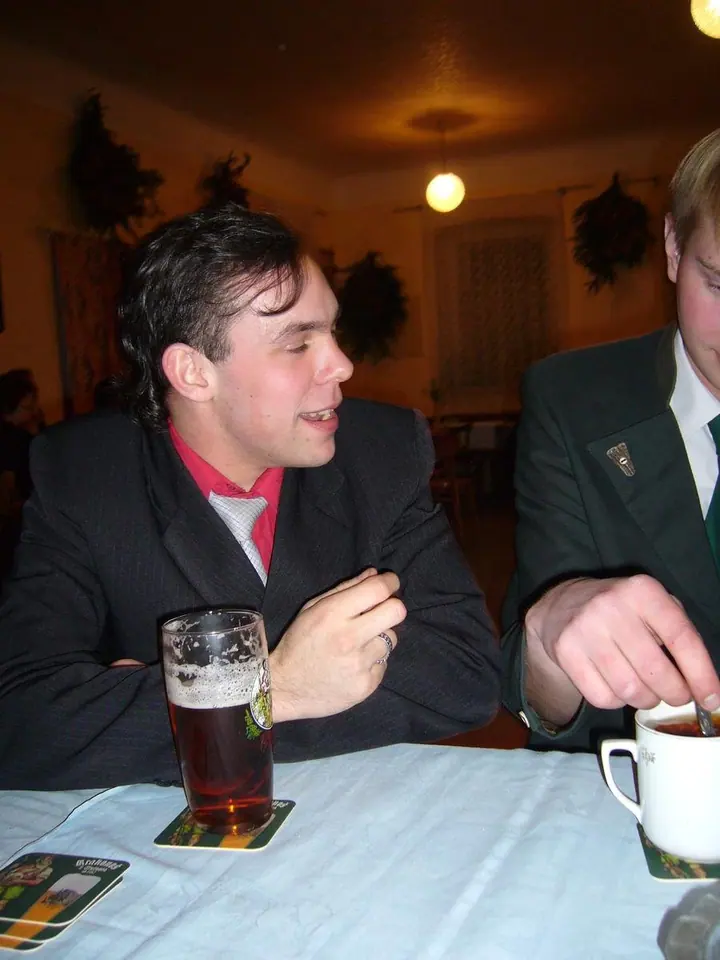
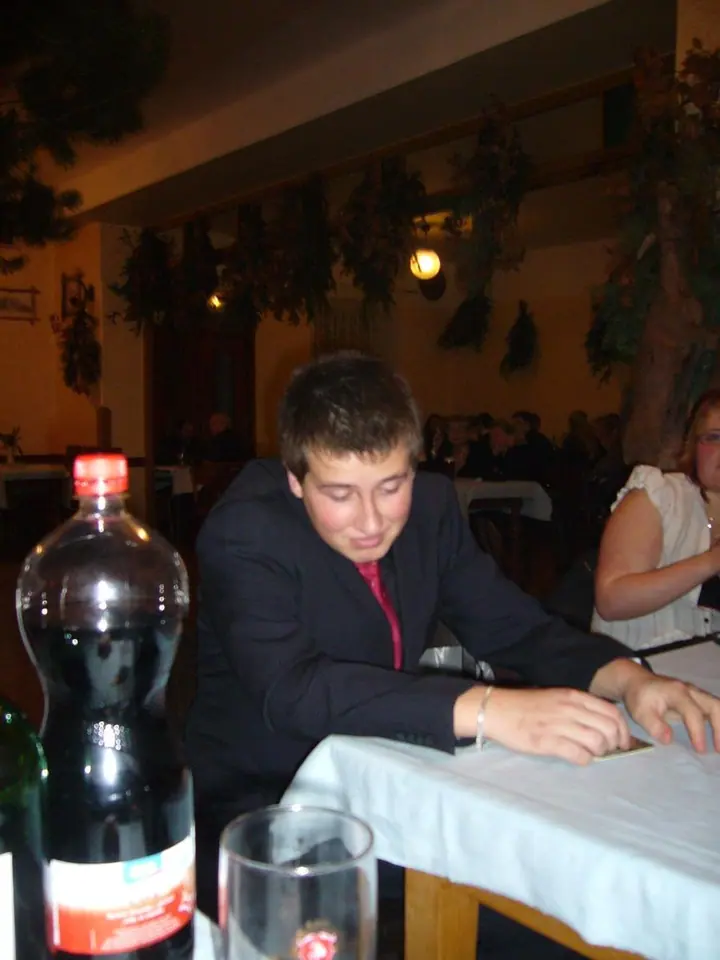
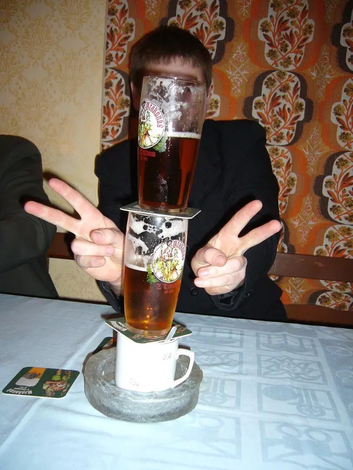
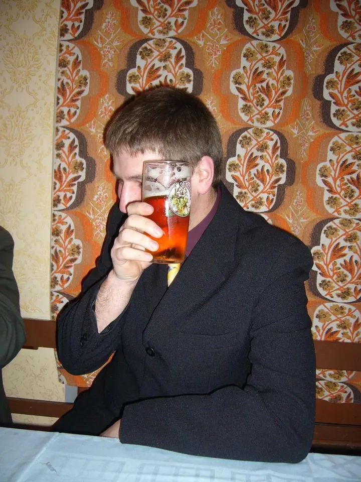
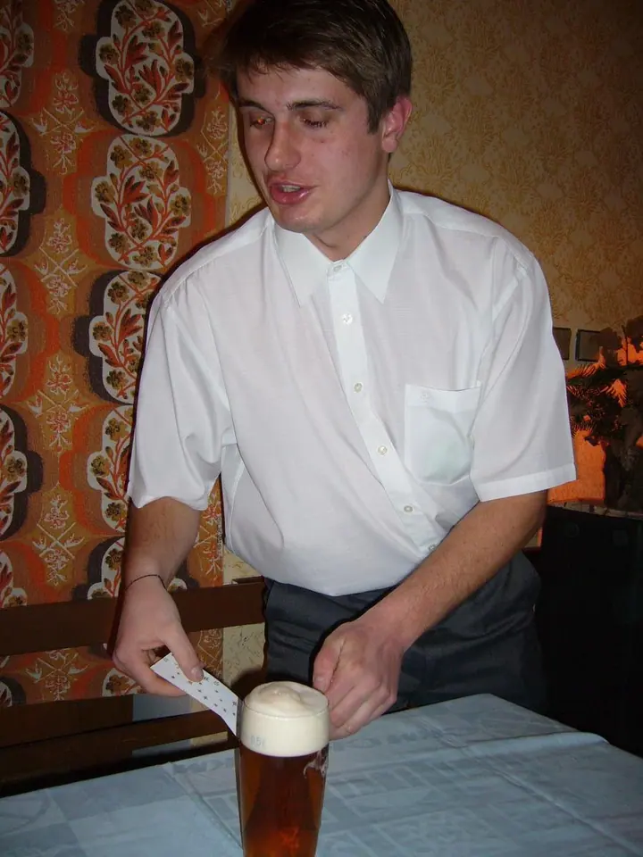
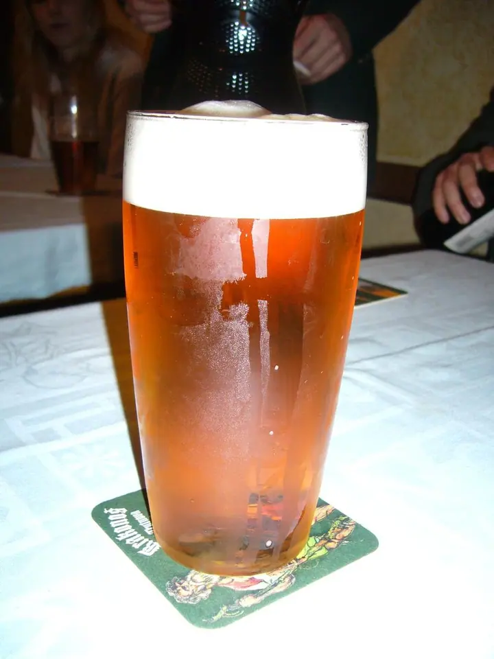

Petr Bach
Večery ve Velkém Vřešťově
Zeptat se na termín →(01) Ahoj
Jmenuji se Petr Bach a ve Velkém Vřešťově fotím akce , plesy a večery v hospodě . Fotky ukládám do alb, aby na ně nikdo nezapomněl.
(02) Co fotím
Focení, které má příběh
(04) Postup
Jak to probíhá
Od první zprávy po hotovou galerii.
-
1
Krok 1 z 4
Napište mi
Ozvěte se e-mailem a domluvíme se.
-
2
Krok 2 z 4
Akce
Fotky vznikají přímo na akcích ve Velkém Vřešťově.
-
3
Krok 3 z 4
Alba
Snímky ukládám do alb na Rajčeti.
-
4
Krok 4 z 4
Heslo
Heslo k zamčeným albům vám pošlu na požádání.
Jeden večer, jedna garáž a spousta fotek
(05) Za objektivem
Ahoj, jsem Petr
Fotky jsou z akcí ve Velkém Vřešťově. Celé to začalo jedním příjemným večerem v garáži u jednoho Vřešťováka a podrobnosti jsme pak doladili v hospodě U Toničky.
Kromě akcí rádi děláme spoustu dalších věcí: hrajeme hokej, lyžujeme, tančíme, plaveme, sáňkujeme, chodíme na túry, čteme a běháme.
Některá alba jsou zamčená heslem. Pokud o ně máte zájem, napište mi e-mail.
- 01Bydlím ve Velkém Vřešťově
- 02Rád hraju hokej
- 03Lyžuji a sáňkuji
- 04Chodím na túry
Petr
Petr Bach · Fotky z akcí ve Velkém Vřešťově
Kde fotky najdu?
Všechna alba jsou na mém profilu na Rajčeti.
Proč jsou některá alba pod heslem?
Některé fotky z akcí nejsou vhodné pro mládež, proto jsou tato alba zamčená.
Jak získám heslo?
Napište mi e-mail a heslo vám pošlu.
Odkud fotky jsou?
Z akcí ve Velkém Vřešťově na Trutnovsku.
(07) Kontakt
Chcete heslo k albům?
Napište pár vět o tom, co si představujete, a termín, který se vám hodí.
petrbach1@email.cz- Portfolio portfolio
- +420 728 469 114
- Velký Vřešťov · Trutnovsko